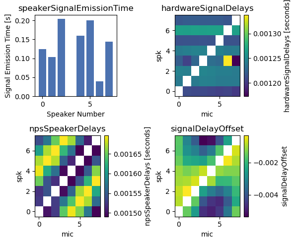
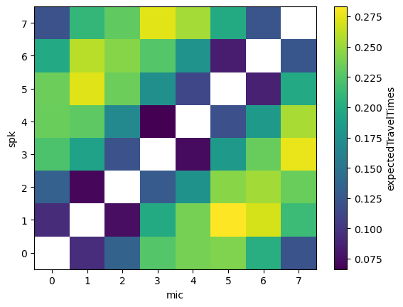
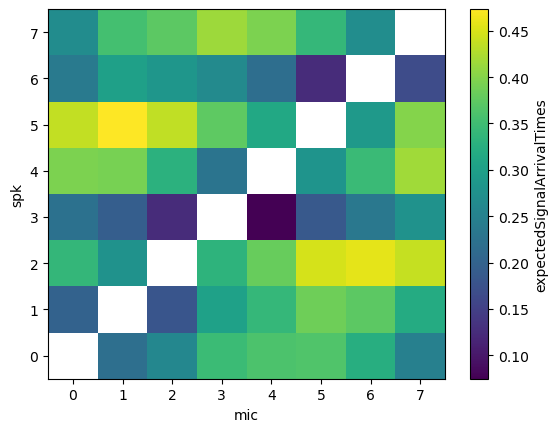
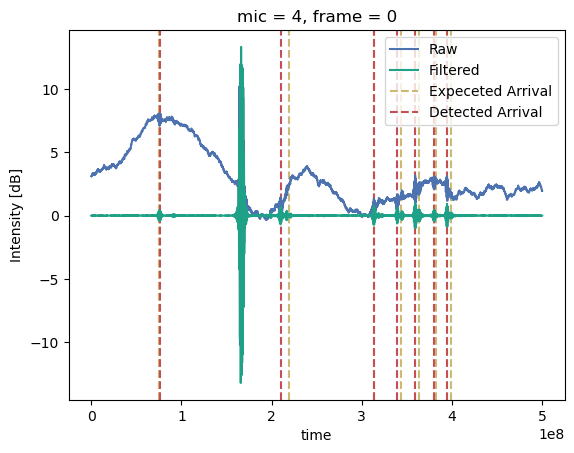
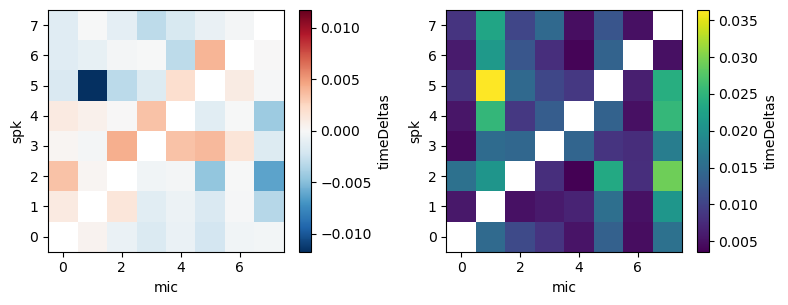
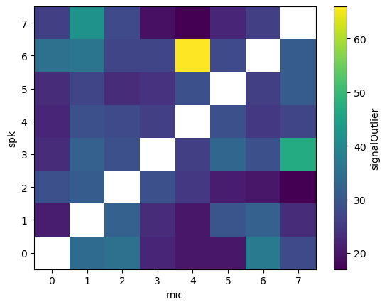
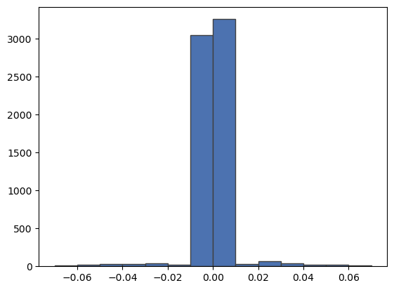

%load_ext autoreload
%autoreload 2
# hardware
import os
# analysis
import numpy as np
import xarray as xr
import pandas as pd
from scipy.integrate import simps
from scipy.interpolate import RegularGridInterpolator
# vis
import matplotlib.pyplot as plt
plt.style.use('seaborn-v0_8-deep')
# Acoustic tomography package
import atom
# configuration object
from hydra import initialize, compose
from hydra.utils import instantiate
with initialize(version_base=None, config_path="../../conf/"):
cfg = compose(config_name="configs",)
Travel Time Extraction#
This is the crux of the signal processing module of the code. The error tolerance in measurements is only about 0.001 s or less, so the travel time measurements need to be done carefully, accounting for any sources of delay or bias in the data.
Prep input data#
atArray, audioData, and auxData objects (see 01_signalProcessign_20240411.ipynb for detail)
### Array data
atarray = instantiate(cfg.atarray)
### Microphone data
audiodata = instantiate(cfg.audiodata)
mainDataPath = "../MainData_example.txt"
audiodata.loadData(mainDataPath)
### Auxiliary data
auxdata = instantiate(cfg.auxdata)
auxDataPath = "../AuxData_example.txt"
auxdata.loadData(auxDataPath)
## Constants
constants = instantiate(cfg.constants)
Instantiate the TravelTimeExtractor object#
instatiate from signal processing and configuration objects
calculates path info (length, orientation, unit vector) internally
path integral information setup for later use
plot speaker and microphone locations
plot acoustic travel paths
## TravelTimeExtractor
ttextractor = atom.signalProc.TravelTimeExtractor(
atarray=atarray.ds,
audiodata=audiodata.ds,
auxdata=auxdata.ds,
configData=cfg.traveltimeextractor,
)
ttextractor.extractTravelTimes()
The TravelTimeExtractor.extractTravelTimes method is a shortcut that performs the following functions:
TravelTimeExtractor.signalETAs()TravelTimeExtractor.filterMicData()TravelTimeExtractor.refSig = self.audiodata.refSigTravelTimeExtractor.findPeakCorrelations()TravelTimeExtractor.calculateMeasuredTravelTimes()TravelTimeExtractor.filterTravelTimes()
Estimate Signal arrival times#
Signal ETAs combine several sources of potential delay:
audiodata.speakerSignalEmissionTimeare delays associated with the variable emission times of signals from the speakersatarray.hardwareSignalDelaysare the signal relay delays in the system of sensors, cabling, data acquisiton components, pc, etc.atarray.npsSpeakerDelaysare delays that arise from the non-point source nature of the speakersA correction (
signalDelayOffset) is added to the combined delays from above
fig, ax = plt.subplots(2,2, figsize=(6,5))
ax=ax.flatten()
ax[0].bar(ttextractor.audiodata.spk, ttextractor.audiodata.speakerSignalEmissionTime)
ax[0].set_xlabel('Speaker Number')
ax[0].set_ylabel('Signal Emission Time [s]')
ax[0].set_title('speakerSignalEmissionTime')
ttextractor.atarray.hardwareSignalDelays.unstack().plot(ax=ax[1])
ax[1].set_title('hardwareSignalDelays')
ttextractor.atarray.npsSpeakerDelays.unstack().plot(ax=ax[2])
ax[2].set_title('npsSpeakerDelays')
ttextractor.ds.signalDelayOffset.unstack().mean(dim='frame').plot(ax=ax[3])
ax[3].set_title('signalDelayOffset')
fig.tight_layout()

The expected travel times of each acoustic signal are estimated from the group velocity along the path and the length of the travel path.
\(t_i = \frac{L_i}{c_0(t)} \left( 1 - \frac{u_0(t) \cos~\phi_i + v_0(t) \sin~\phi_i}{c_0(t)} \right)\)
where the speed of sound \(c\) and two horizontal components of velocity \(u\) and \(v\) are estimate from the sonic anemometer in the auxData object.
ttextractor.ds.expectedTravelTimes.mean(dim='frame').unstack().plot()
<matplotlib.collections.QuadMesh at 0x7fa1fb2234c0>

The combined delays (ttextractor.signalDelays) are added to the signal travel times (ttextractor.expectedTravelTimes) to describe the expected arrival times of each signal at each microphone (ttextractor.expectedSignalArrivalTimes).
ttextractor.ds.expectedSignalArrivalTimes.mean(dim='frame').unstack().plot()
<matplotlib.collections.QuadMesh at 0x7fa1a8534220>

Microphone data are filtered to remove background noise from the signals using a forward-backward, zero-phase optimal Butter band-pass filter. Only frequencies included in the signal design (plus a fudge factor) are included in the filter.
Measured signal arrival times are estimated in the signal by correlating the filtered microphone data with the reference signal emitted from the speakers.
fig, ax = plt.subplots()
c=plt.cm.viridis(np.linspace(0,1,audiodata.ds.nMics))
micNumber = 4
audiodata.ds.micData.sel(frame=0, mic=micNumber).plot(ax=ax, label=f'Raw', alpha=1)
ttextractor.micDataFiltered.sel(frame=0, mic=micNumber).plot(ax=ax,
label=f'Filtered',
c=c[micNumber,:],
alpha=1)
for ii in range(ttextractor.audiodata.nSpeakers-1):
if ii == micNumber:
continue
ax.axvline(10**9 * ttextractor.ds.expectedSignalArrivalTimes.sel(mic=micNumber, frame=0, spk=ii), ls='--', c='C4', zorder=-10)
ax.axvline(10**9 * ttextractor.ds.detectedSignalTimes.sel(mic=micNumber, frame=0, spk=ii), ls='--', c='C2', zorder=-10)
ax.axvline(10**9 * ttextractor.ds.expectedSignalArrivalTimes.sel(mic=micNumber, frame=0, spk=ttextractor.audiodata.nSpeakers-1), ls='--', c='C4', zorder=-10, label='Expeceted Arrival')
ax.axvline(10**9 * ttextractor.ds.detectedSignalTimes.sel(mic=micNumber, frame=0, spk=ttextractor.audiodata.nSpeakers-1), ls='--', c='C2', zorder=-10, label='Detected Arrival')
plt.ylabel('Intensity [dB]')
plt.legend()
<matplotlib.legend.Legend at 0x7fa2091be140>

fig, ax = plt.subplots(1,2, figsize=(8,3.15))
ttextractor.ds.timeDeltas.mean(dim='frame').unstack().plot(ax=ax[0])
ttextractor.ds.timeDeltas.std(dim='frame').unstack().plot(ax=ax[1])
fig.tight_layout()

Measured travel times are filtered to remove outliers and to infill signal detection failures.
ttextractor.ds.signalOutlier.sum(dim='frame').unstack().plot()
<matplotlib.collections.QuadMesh at 0x7fa21909a4d0>

The difference between the expected travel times and the detected travel times arises from fluctuations of velocity and temperature along each travel path. These time deltas construct the data vector ultimately used in field retrieval with the time-dependent stochastic inversion.
hist = plt.hist(ttextractor.ds.timeDeltas.values.flatten(), bins=np.arange(-0.07, 0.071, 0.01), ec='.25')

delta_theta = atarray.ds.pathOrientation - ads.uDir.resample(time='60S').mean()
theta_i = atarray.ds.pathOrientation
Li = atarray.ds.pathLength
tt_err = ttds.timeDeltas # detected - expected signal arrival times
tt_err_mean = tt_err.mean(dim='time')
# estimated
tt_est = ttds.expectedTravelTimes
# Measured
tt_meas = ttds.filteredMeasuredTravelTimes#(ttds.detectedSignalTimes.unstack() - audiodata.ds.speakerSignalEmissionTime).stack(pathID=['spk','mic']).dropna(dim='pathID', how='all')
# Fill NaN values with the mean along the 'x' dimension
tt_meas = tt_meas.combine_first(tt_meas.mean(dim='new'))
### Save xr.dataset as netcdf
ttextractor.to_netcdf('../extractedTravelTimes_example.nc')